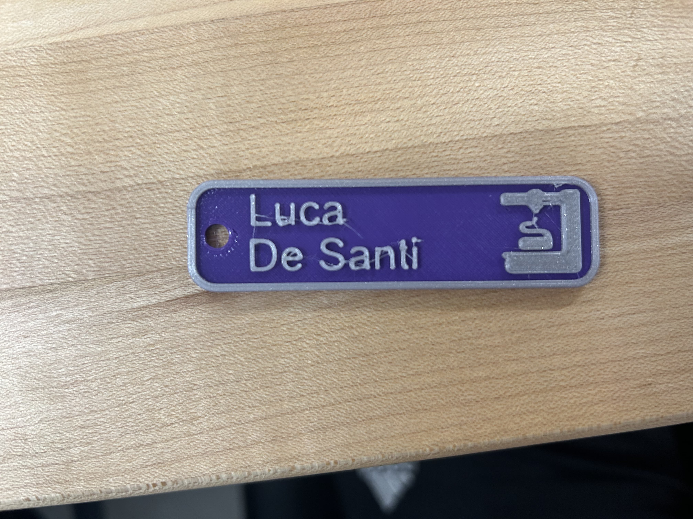

This Nametag 3D print was my first 3D print ever, so I made some mistakes. On my first attempt at printing this nametag, after the first color was complete, I didn't insert the filament correctly, which caused my print to fail.
So I reprinted the first layer and received some help on the second layer where the filament change was necessary.
For the second part of the assignment, I had to find a print that would fail. The hardest part was finding a print that would fail in a way I could learn from. I had 2 initial attempts that failed immediately, so I was told to choose one that would fail at the right time.
I did this by choosing something that would fail at the top because of gravity, so I chose an Egyptian god with a protruding nose. I knew for sure that this would fail and gravity in this case would be my friend.
Here the design failed exactly where the nose was protruding, and since there were no supports, the design failed. However, I was still very impressed with the upper part of the nose, which held together really well.